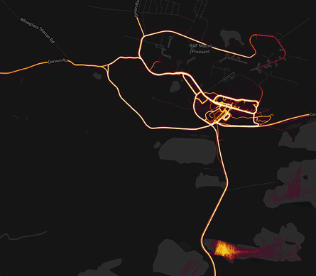

Sensitive information about the location and staffing of military bases and spy outposts around the world has been revealed by a fitness tracking company.
The details were released by Strava in a data visualisation map that shows all the activity tracked by users of its app, which allows people to record their exercise and share it with others.
The map, released in November 2017 , shows every single activity ever uploaded to Strava – more than 3 trillion individual GPS data points, according to the company . The app can be used on various devices including smartphones and fitness trackers like Fitbit to see popular running routes in major cities, or spot individuals in more remote areas who have unusual exercise patterns.
However, over the weekend military analysts noticed that the map is also detailed enough that it potentially gives away extremely sensitive information about a subset of Strava users: military personnel on active service.
Nathan Ruser, an analyst with the Institute for United Conflict Analysts, first noted the lapse. The heatmap “looks very pretty” he wrote, but is “not amazing for Op-Sec” – short for operational security. “US Bases are clearly identifiable and mappable.”
“If soldiers use the app like normal people do, by turning it on tracking when they go to do exercise, it could be especially dangerous,” Ruser added , highlighting one particular track that “looks like it logs a regular jogging route.”
“In Syria, known coalition (ie US) bases light up the night,” writes analyst Tobias Schneider . “Some light markers over known Russian positions, no notable colouring for Iranian bases … A lot of people are going to have to sit through lectures come Monday morning.”
In locations like Afghanistan , Djibouti and Syria, the users of Strava seem to be almost exclusively foreign military personnel, meaning that bases stand out brightly. In Helmand province, Afghanistan, for instance, the locations of forward operating bases can be clearly seen, glowing white against the black map.
Helmand province in Afghanistan.Photograph: Strava heatmap
Zooming in on one of the larger bases clearly reveals its internal layout, as mapped out by the tracked jogging routes of numerous soldiers. The base itself is not visible on the satellite views of commercial providers such as Google Maps or Apple’s Maps, yet it can be clearly seen through Strava.
Outside direct conflict zones, potentially sensitive information can still be gleaned. For instance, a map of Homey Airport, Nevada – the US Air Force base commonly known as Area 51 – records a lone cyclist taking a ride from the base along the west edge of Groom Lake, marked on the heatmap by a thin red line.
Area 51, with a lone cyclist marked on the map.Photograph: Strava heatmap
RAF Mount Pleasant in the Falkland Islands is lit up brightly on the heatmap, reflecting the exercise regimes of the thousand British personnel there – as are nearby Lake Macphee and Gull Island Pond, apparently popular swimming spots.
RAF Mount Pleasant in the Falkland Islands.Photograph: Strava heatmap
When Strava released the heatmap, an updated version of one it had previously published in 2015, it announced that “this update includes six times more data than before – in total 1 billion activities from all Strava data through September 2017. Our global heatmap is the largest, richest, and most beautiful dataset of its kind. It is a direct visualisation of Strava’s global network of athletes.”
Strava demonstrated that the new heatmap was detailed enough to see kiteboarding in Mexico, to track the route of the Camino de Santiago across northern Spain and to see the sea route of the Ironman triathalon in Kona, Hawaii. Perhaps the closest to the current operational security issues that it noted, however, was the layout of the Burning Man festival in the Nevadan desert. “The unique pentagonal pattern of Burning Man’s pop-up city is forever etched into the Heatmap, thanks to all the runners and cyclists who have used Strava to explore it,” the company wrote .